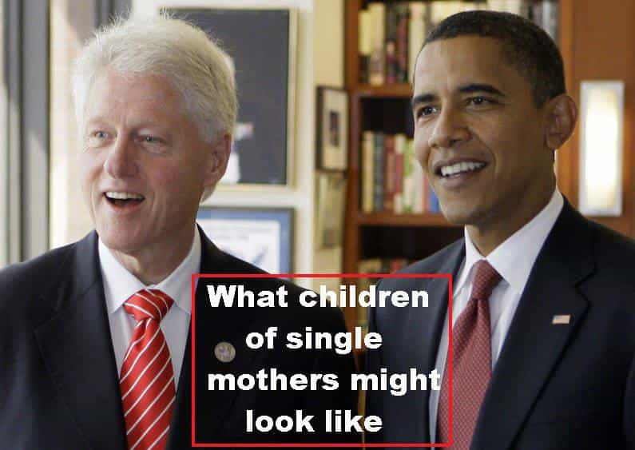
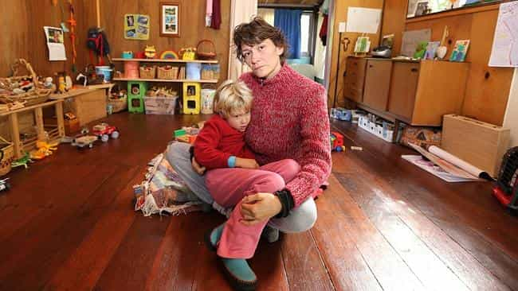
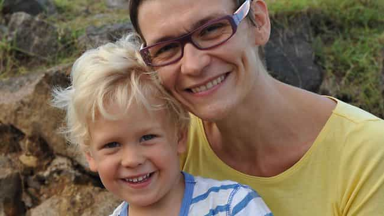
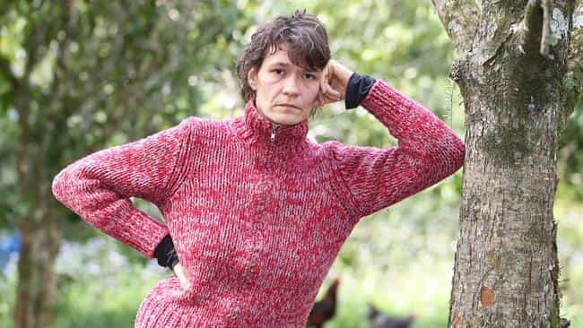

< < < Back
Immigrant Single Mother Demands More Than $1,000 A Month In Welfare – Return Of Kings
Agnieszka Swiatlowska has high expectations. And she wants guys like you and me to pay for them. The largely unemployed Polish immigrant to Australia, who has a young school-age son, currently receives $530 per fortnight as a new Australian citizen. But she wants more and is demanding she gets it.
Non-citizen Australian permanent residents must wait 104 weeks to receive certain extra welfare payments. So Swiatlowska will have more than her current $530 come this September. She became a naturalized citizen in March but this does not affect the waiting period for migrants.
Unversed in the responsibility of a country to look after its own citizens, and avoid people using newly acquired Australian citizenship as a cash cow, Swiatlowska claims she is being discriminated against and that the government made a “mistake,” despite the law being incontrovertibly clear. She must wait, as she’s both a recent permanent resident and new Australian citizen (how did she get in?).
Swiatlowska’s trump card is that she’s a single mother. After all, why should women have to make sure that they can support a child before they get pregnant? That would be asking far too much!

Yes… because the vast majority of children raised by single parents end up like this?
After our Poland-residing Roosh, I declare myself ROK’s resident Polish expert. Despite strong economic forecasts, including the biggest long-term growth rate of any major EU country, Poland’s welfare system is much less generous than Australia’s. Although I was pleasantly surprised at the relative rate of support Poland affords many of its students and disabled, the best thing for a Pole is steady employment.
By contrast, in Western Europe, the United States, Canada, and Australia, people may earn more from a job, but the relative difference between working and living at the expense of the state is more marginal. Surely Swiatlowska sensed this. Whilst she may be genuinely unemployed or underemployed, the safety net of the welfare state clearly solidified her desire to stay in Australia, especially with a very young son.
Australia isn’t the only case

If Swiatlowska thinks she’s in hardship, try being a senior citizen on a pension. Unlike them, Swiatlowska can physically work, if she gets rid of the emotional sense of entitlement, that is.
The United States and Britain, and to a large extent Germany, are now the world’s largest beehives for migrants looking for a welfare state or other honey. Understandably, these countries erect barriers and impose limits to prevent opportunistic individuals, who number in the hundreds of thousands and millions, from emigrating to their lands and living on the public teat and at the expense of everyone else.
Sadly for Great Britain, do-gooder European Union laws and regulations regarding the free movement of people make stopping this a truly gargantuan task. In the United States, the debate about illegal immigration and its attendant costs has regressed to the point where opponents of the southern US border being effectively open are labeled as intransigent racists and bigots.
Likewise, the United States’ dazzling debt, nearly $20 trillion, has not stopped Democrats and their SJW allies from ramping up the welfare state to its highest ever levels.
In a world where we are surrounded by so many cases of victimhood, including the highly disabled, cognitively impaired, and others in our own neighbourhoods, it riles me, as it should you as readers, that able-bodied women like Swiatlowska spend their time shouting from their own self-made pedestal instead of exploring every avenue for a job.
What else can we expect, though? Having fed people the dream for years that government should support them, above all single mothers, individuals are merely taking up the promised offers.
Swiatlowska has tried to grab headlines before

Attention seeker on the right.
Excuse my incredulity about her genuineness, but Swiatlowska seems to be a compulsive attention seeker. Few, if any of the news stories about her recent grab for more welfare money discussed her previous involvement with the media. She had fronted Australia’s only truly national newspaper, aptly named The Australian, to declare she wanted surrogate grandparents for her young son. And so the Saint of Single Motherhood finds yet another platform.
On the one hand, in most instances I would applaud a search for elderly role models. Senior citizens generally have much more common sense, have worked harder throughout their lives and have more quality life experiences, even on a per year basis, than those of us growing up in newer generations characterized by surrounding social and political decay.
When read with the welfare story, however, you can start to believe that Swiatlowska only wants the entire community, whether other individuals, her ex-partner, or the state, to attend to needs of hers that most people take (and simply must take) care of themselves. For every one Swiatlowska who goes to the media or kicks up a similar public stink, another hundred or thousand ply their mollycoddled trade of “Why me?” behind the scenes in normal life.
We must stop the rot

Swiatlowska claims she has the skills, so why is no one employing her? I wonder why…
The debacle unfolding now in Greece, as it has for years, demonstrates what decades of over-reliance on the welfare state does not only to countries, but also to the societies that breathe life into them. The United States, Canada, Great Britain, Australia and other nations are on the same precipice that Greece ignored at the start of the century when joining the Eurozone.
Someone criticizing even a “me, me, me” person like Agnieszka Swiatlowska risks social castration for their perceived lack of empathy, sexism, and privilege. But if the brave don’t sound the alarms for society, who will?
We are living in truly scary times. Designed as a safety valve to divert assistance to those who truly needed it, the welfare state is sucking the marrow from the bones of once proud and self-reliant communities. No matter how independent you are, no matter how much you have earned your station in life, the collapse of states dependent on welfare will ruin your existence as well.
Be warned.
Read More: You’re A Monster If You Don’t Support The Welfare State